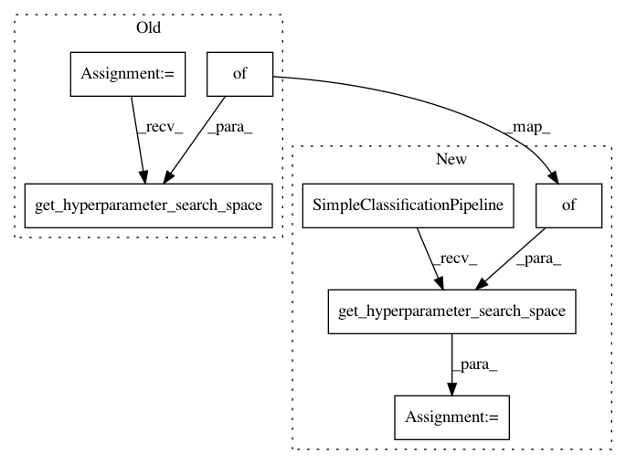

9a62e98e14c1ad88b29baee3e5ba55cb45ac7aec,test/test_pipeline/test_classification.py,SimpleClassificationPipelineTest,test_configurations_signed_data,#SimpleClassificationPipelineTest#,177
Before Change
self._test_configurations(configurations_space=cs)
def test_configurations_signed_data(self):
cs = SimpleClassificationPipeline.get_hyperparameter_search_space(
dataset_properties={"signed": True})
self._test_configurations(configurations_space=cs)
def test_configurations_sparse(self):
After Change
self._test_configurations(configurations_space=cs)
def test_configurations_signed_data(self):
dataset_properties = {"signed": True}
cs = SimpleClassificationPipeline().get_hyperparameter_search_space(
dataset_properties=dataset_properties)
self._test_configurations(configurations_space=cs,
dataset_properties=dataset_properties)
In pattern: SUPERPATTERN
Frequency: 3
Non-data size: 7
Instances
Project Name: automl/auto-sklearn
Commit Name: 9a62e98e14c1ad88b29baee3e5ba55cb45ac7aec
Time: 2016-12-31
Author: feurerm@informatik.uni-freiburg.de
File Name: test/test_pipeline/test_classification.py
Class Name: SimpleClassificationPipelineTest
Method Name: test_configurations_signed_data
Project Name: automl/auto-sklearn
Commit Name: 9a62e98e14c1ad88b29baee3e5ba55cb45ac7aec
Time: 2016-12-31
Author: feurerm@informatik.uni-freiburg.de
File Name: test/test_pipeline/test_classification.py
Class Name: SimpleClassificationPipelineTest
Method Name: test_default_configuration_multilabel
Project Name: automl/auto-sklearn
Commit Name: 8118fe98fb3c10515476ca49fceef2162a9754af
Time: 2016-07-13
Author: feurerm@informatik.uni-freiburg.de
File Name: test/test_pipeline/test_classification.py
Class Name: SimpleClassificationPipelineTest
Method Name: test_default_configuration_multilabel